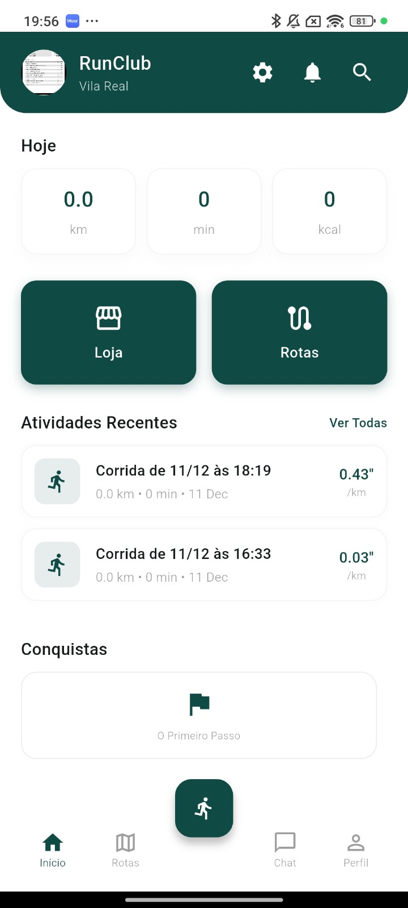
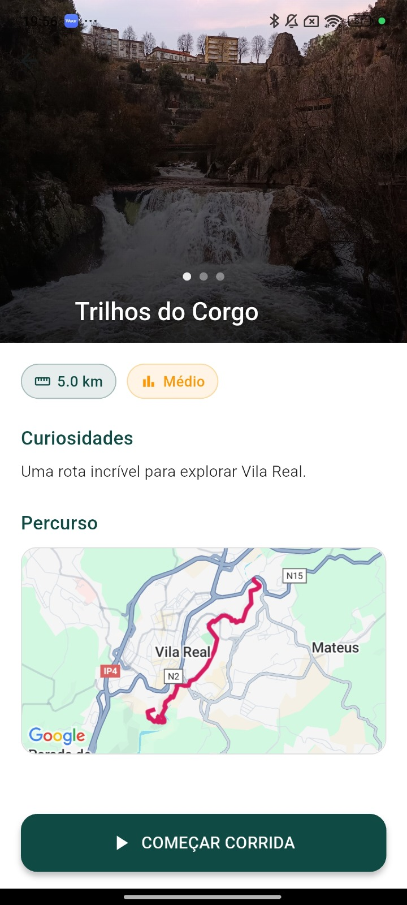
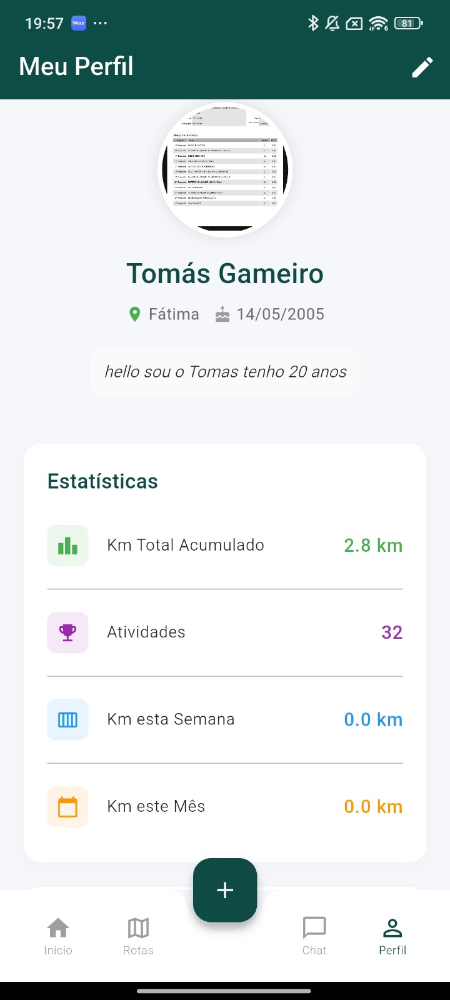

THE Unknown Ruins
GÉNERO
Jogo
Linguagens Utilizadas
C# | Unity 3D
ANO
2025
The Unknown Ruins é um jogo 3D de ação e aventura em primeira pessoa desenvolvido em Unity, onde o jogador controla um explorador que desperta sem memória num complexo de ruínas antigas. Ao longo de cinco níveis progressivos, o jogador resolve puzzles, ativa mecanismos, evita armadilhas e enfrenta inimigos com comportamentos de patrulha e deteção por som. O jogo integra sistemas de sprint, agachamento, arma com mira e recarregamento, power-ups temporários e progressão por chaves. O objetivo final é ativar um portal misterioso e escapar das ruínas.
↗ Código no GitHub
HOMEPAGE

ROTAS

PERFIL

PERFIL
PERFIL
PERFIL